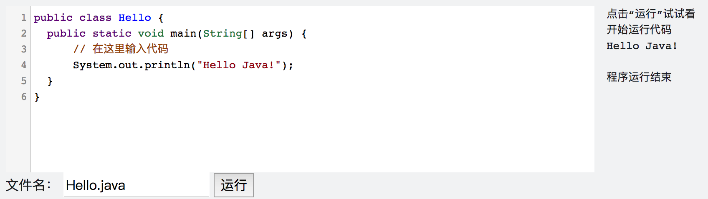

输入输出
对于计算机程序的运行来说，我们先给程序提供必要的数据信息（输入），然后程序进行一系列的运算，再把结果告诉我们（输出），就像下面这张图画的这样：

在AP里，如果出现输入则会特殊说明，输出用的则是System.out.println，如果我们想输出Hello Java!，则可以使用如下的语句：
System.out.println("Hello Java!");
上面的语句中的一对双引号意味着我们要原样输出引号之间的内容，整个语句的意思是要输出Hello Java!并且 换行，这里的"Hello Java!"有一个名字，叫字符串(String)，最后的分号说明这条语句结束了，把这条语句和其他内容分隔开来。当然我们也可以使用不换行的版本：
System.out.print("Hello Java!");
不过如果使用这个语句的话，上一次和下一次输出的内容就会混在一起了，因此AP中主要使用的还是System.out.println。
下面是练习框，让我们跟着练习框的下方的指示一起来熟悉一下练习环境吧。
<lab lang="java" parameters="filename=Hello.java">
public class Hello {
public static void main(String[] args) {
// 在这里输入代码
}
}
</lab>
让我们在// 在这里输入代码后面另起一行，输入：
System.out.println("Hello Java!");
之后点击“运行”按钮。
结果应该是这样： 
细心的你可能会发现我们的练习操作台上有“文件名”一栏，填的是“Hello.java”，这是因为在Java里，文件名需要和类名一致，之后我们会讲到类的概念，到时候你就明白这是为什么啦。
这样，我们就做出了一个小程序，它能做出最基本的输出功能，是不是很有意思呀~
掌握了吗？如果掌握了，就按一下右下方这个按钮吧~
转义
如果是输出简单的文字，那上面的知识已经足够了，但如果是要输出一些特殊的文字，比如"，直接放入引号内可就不行了，我们可以试一试：
<lab lang="java" parameters="filename=Hello.java">
public class Hello {
public static void main(String[] args) {
// 在这里输入代码
System.out.println(""");
}
}
</lab>
运行之后我们会发现错误是Hello.java:4: error: unclosed string literal，这其实想告诉我们的是，Java认为我们前面的一对""是一对双引号，双引号间的内容就是我们要输出的文字，而后面的"落单了，Java找不到匹配的双引号。因此我们要让Java知道我们的第二个双引号是要用来原样输出而不是当做字符串结束的。在Java里面，我们可以在"前面加一个\来告诉Java，方式如下：
<lab lang="java" parameters="filename=Hello.java">
public class Hello {
public static void main(String[] args) {
// 在这里输入代码
System.out.println("\"");
}
}
</lab>
这样就可以成功输入一个双引号了。在这里，我们涉及了一个概念，叫做转义(escape)，之前用的一个\"则称为转义序列(escape sequence)。常见的转义序列有：
| 序列 | 含义 |
|---|---|
\" |
双引号 |
\n |
换行 |
\\ |
\本身 |
根据上面说的点我们可以发现，System.out.println("Hello Java!")和System.out.print("Hello Java!\n")其实是等价的，你也可以亲自试一试😀。
注释
你可能已经在上面的代码里发现了// 在这里输入代码这一行，这一行就是我们所称的注释（comment），这行对于Java来说并没有什么含义，然而对阅读代码的人来说却至关重要。注释描述了代码的内容和要注意的点。注释有两种，一种是行注释，就像上面的这个例子，只对一行//后面的内容有效，另一种是块注释，写法是/*注释内容*/对/*和*/之间的内容都有效，可以好几行。
小练习
让我们来练习一下我们刚学习的知识吧。
<lab lang="java" parameters="filename=Hello.java">
public class Hello {
public static void main(String[] args) {
// 在这里输入代码
}
}
</lab>
试试做出如下的效果：
- 输出“我要认真学习编程” （不带引号）
- 输出“""”（两个英文双引号）
- 输出ABC，然后换行输出DEF
学到这里，你就已经入门Java编程啦👏，加油加油继续学习吧~